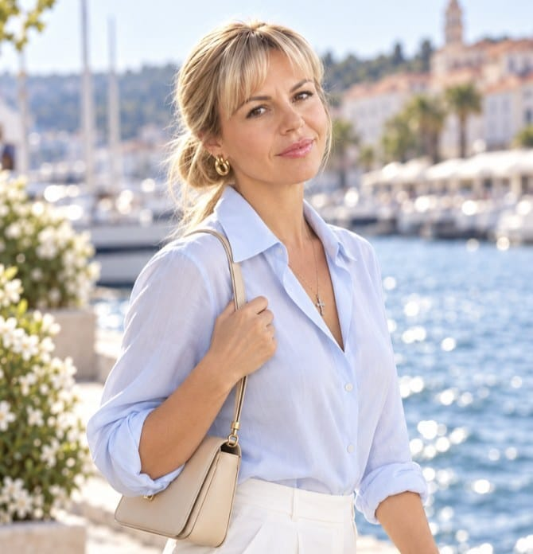
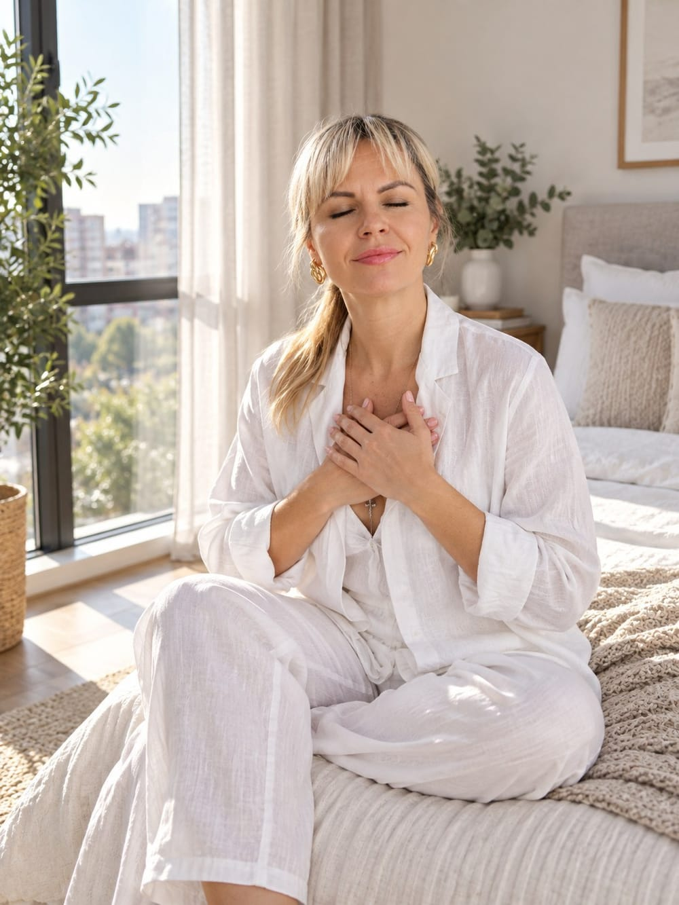

Публикации
О работе, выборе и внутренней опоре: как принимать решения, находить своё дело и не терять себя в профессии.

Отношения с собой
Почему это главное, что у нас есть
Почему отношения с собой важнее любых внешних? Разбираемся, как внутреннее состояние отражается на всей жизни.
Читать статьюТалант и призвание
Как реализовать то, что задумано о тебе
У каждого есть талант. Разбираемся, как реализовать задуманное о тебе и не гнаться за чужим успехом.
Труд как ценность
Почему важно быть нужным
Почему труд обесценен и как вернуть ему ценность? Разбираемся, что значит трудиться по-настоящему и быть нужным.

Вера как опора
Где искать силы, когда всё рушится
Потеряли опору и не знаете, где взять силы? Разбираемся, как вера помогает выстоять в кризисе.
Смысл не находят — его создают
Почему поиск призвания заводит в тупик
Ищете своё призвание, но не находите? Разбираемся, почему смысл не находят, а создают, и как перестать гнаться за озарением.
Партнёрство
Когда 1+1=11 — сила синергии и как найти своего партнёра
Почему вместе получается больше? Разбираемся, как работает синергия в партнёрстве и что нужно, чтобы 1+1 стало 11.

Ценности как компас
На что опираться, чтобы принимать верные решения
Не знаете, куда двигаться? Разбираемся, как ценности становятся внутренней опорой и помогают принимать решения.

Откладывание важных решений
Почему мы не решаемся и что делать
Годами не можете принять важное решение? Разбираемся, почему мы откладываем перемены и как сдвинуться с места.

Кто ты без работы
Кризис идентичности, когда профессия перестаёт быть опорой
Кто вы, если не работаете? Разбираемся, почему профессия становится главной опорой и как вернуть себе другие роли и смыслы.
Парадокс выбора
Почему изобилие возможностей мешает решиться
Много вариантов, но вы не можете выбрать? Разбираем парадокс выбора: почему изобилие парализует и как принять решение.
Успех без радости
Почему достижения не приносят счастья
Чувствуете пустоту, достигнув цели? Разбираемся, почему успех не приносит радости и что с этим делать.
Хотите разобраться в своей ситуации лично?
Записаться на диагностику